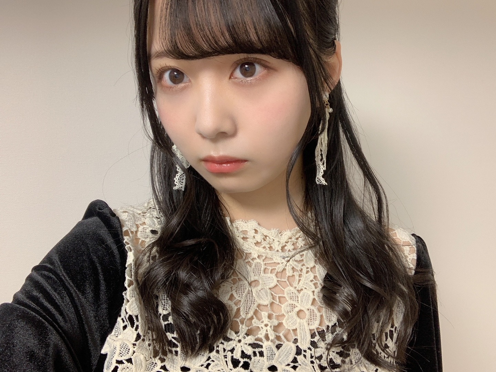
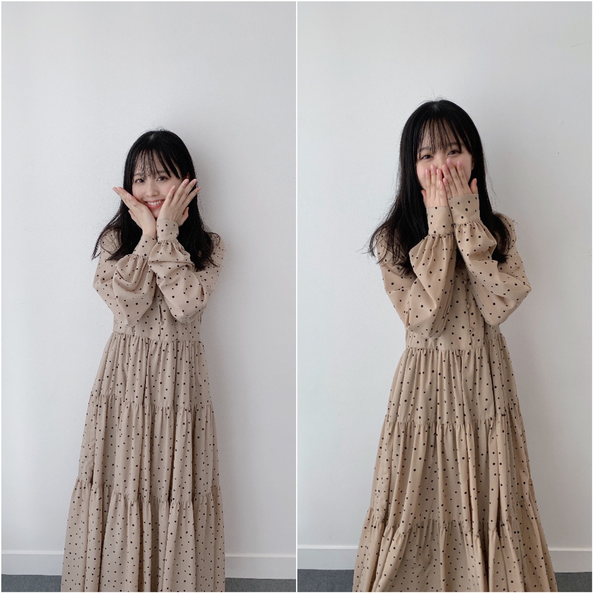
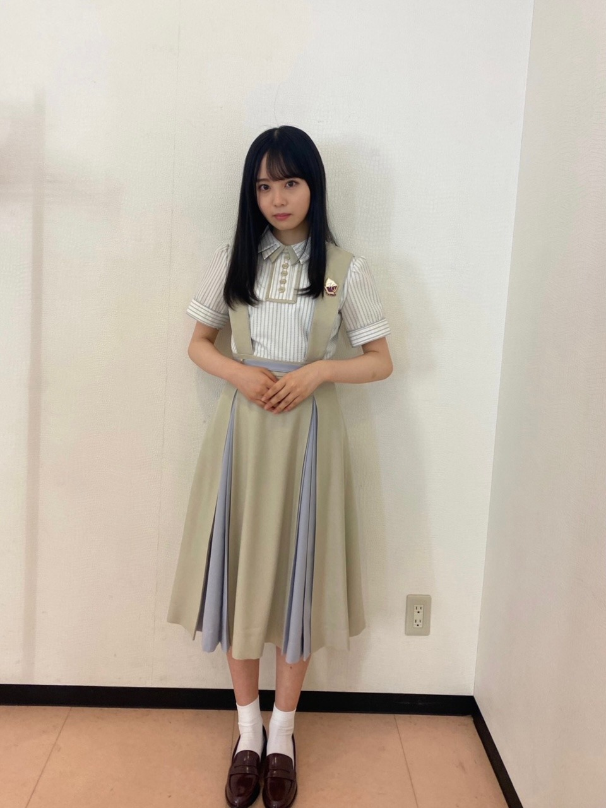

2020/1109Mon冬にまた。佐藤璃果
こんにちは~
乃木坂46 (新)4期生 岩手県出身
佐藤璃果です。

♡ベロアのワンピース♡
違う髪型ver.もあるのでまたいつか！
昨晩は、
｢らじらー！サンデー｣さん
初登場でした！ありがとうございました。
生放送も初めてですし、
乃木坂の先輩方以外とラジオで
トークをさせて頂くのも初めてでした。
お聞き苦しいところもあったかと思います。
吉村さんが言ってくださった
｢台本なんて見なくていいから！｣という言葉に救われました。
私は結構決められたことを全うしてしまう所があって、それで頭がいっぱいになるので、そう言っていただけて、少し余裕を持ってお話することが出来ました。
藤森さんの何を言っても受け止めてくださる優しさに救われました。
これを言ってもなんでも返して下さるんだろうなという安心感が本当に有難かったです。
緊張しましたが
いい経験になったかと思います( *´꒳`*)
聞いて下さった皆様、
関わってくださった皆様、
ありがとうございました。
全部はご紹介出来ませんでしたが、
沢山沢山、色々考えてメールを送ってくださってありがとうございました。
本番ギリギリまで大園さんのらじらー！を聞かせて頂いていて、あの優しい空気感を作って下さったから話す事が出来ました。
大園さんが気付いていないだけで、私は大園さんの優しさに救われている事あるんですよ！
鈴木さんに｢めんこいですねぇ！！！｣
と話し掛けようと思いました。
お会いしたら美しすぎて、
お疲れ様です。しか言えませんでした。
ううう。(´._.`)
❁
んだりか！！！
喋りか、黙りか、無理か
りか三段活用。
これから使っていきたいなぁと思います！
よろしくお願いします︎︎☺︎
~~~~~~~~~~~~~~~~~~
〇ananさん、11月4日 発売
乃木坂46全員登場回です。
待ち時間の編集部の方との
お話も楽しかったですし、
メイクさんに色々聞けたのも嬉しかったです！勉強になりました。
髪をふわふわにしてもらったことがポイントです。私も誌面を拝見させていただくのが楽しみです。
新4期生の企画は大盛り上がりで、新たな
一面をお互いに知れたいい機会でした。
ありがとうございました。

ドット柄可愛いですね
~~~~~~~~~~~~~~~~~~~
4期生単独ライブが無観客という形で
させて頂けることになりました。
16人で初めての4期生ライブです。
ものすごく緊張しています。
この話を聞いた時は鳥肌が立ちました。
無観客でも、見ていて下さる方を
元気にしたい、笑顔にしたいという気持ちは変わりません。
未だ前のような日常とは違う日々を
懸命に過ごす皆さんに、
このライブで皆さんに沢山の明るい感情を
届けられたらと思います。
誠心誠意頑張って参ります。
よろしくお願いします。
~~~質問~~~
〇雪だるま作りと雪合戦どっちが好きですか
雪だるまです⛄️
〇璃果ちゃんが今ハマってる曲はありますか??
最近またSEKAI NO OWARIさん
を沢山聞いています！
｢silent｣｢プレゼント｣などなど、、
あとはeillさん
｢踊らせないで｣｢片っぽ｣｢SPOTLIGHT｣
あとは緑黄色社会さんの
｢Mela!｣
〇璃果ちゃんが一番好きな髪型はなんですか??
結んだり、編み込みだったり、、
なんでも好き
〇ハロウィンは何をしましたか？
何もしてないんです...
皆さんのハロウィンエピソード
分けて欲しいです、、。
〇今度、仙台方面に2泊3日の日程で旅行行くのですが、東北出身の璃果ちゃんからオススメの場所や行った方がいい場所あれば教えてもらいたいです！よろしくお願いします。
仙台のひょうたん揚げがとても美味しいです！ぜひ食べてみてください~。
〇堀さんのインスタで新制服になったことを知ったのですが、璃果ちゃんは襟タイプと大きいリボンのタイプのどちらですか？
堀さんも、皆さんも本当に似合っていて素敵ですよね...。
私は、襟タイプです！

長袖の部分がないバージョン。
これからまた沢山制服の写真を載せられたらいいなぁと思います！
☆アホ毛が1本だけ飛び出ているのがポイントです！
〇いつもおうちではどのように焼き芋を作っていますか？
私のレンジは焼き芋モードがあるので、焼き芋モードで柔らかさがでるまで焼いています！
本当は炊飯器でやると美味しいらしいのですが、炊飯器を持っておらず...。
地元にいる時は、
キッチンペーパーを水で少し濡らして、
それでお芋を包んで、
サランラップにまたそれを包んで、
温めていました！
弱火でじっくり温めがオススメです！
~~~~~~~~~~~~~~~~~~~
〇10月31日、金川沙耶ちゃん
❁お誕生日おめでとう❁
優しくてオシャレで、ダンスもカッコよくて、笑顔がとっても素敵な、
さやんちゃんが大好きです♡
最近沢山話せるようになって、
写真を撮ったりと、幸せです！
今はとても、優しいお姉さん！という感じだし、さやんちゃんも、
同い年に見えなーい！って言ってくれてて！
んふふふ。
同い年同士、これからもよろしくね！
ご飯、ショッピング
いつか行けるの楽しみだあ♡
最近お互い付けあったあだ名で呼び合うの
とても好きです！
素敵な1年になりますように。
〇11月1日、渡辺みり愛さん、
❁お誕生日おめでとうございます❁
新4期生みんなが言っている通り、
白石さんの卒業コンサートにて、新4期生のところに来て教えて下さったり、
有難いお言葉を掛けて頂いたこと、
私もすごく記憶に残っています。
沢山教えて頂き、ありがとうございました。
みり愛さんの白いお肌が
本当にすごいなって思っています。
もっと色々なお話をしていければと思います。
素敵な1年になりますように。
~~~~~~~~~~~~~~~~~~~
明日はるなぴです。
外ハネ可愛いね！似合ってる❣️
~~~~~~~~~~~~~~~~~~
皆さんにとって
素敵な1日になりますように。
またね。
ブログも頑張るね。
いつもコメントや、ライブについての感想、雑誌の感想、ありがとうございます。
#40 りか

PROFILE
新4期生リレー
202104
| SUN | MON | TUE | WED | THU | FRI | SAT |
|---|---|---|---|---|---|---|
| 1 | 2 | 3 | ||||
| 4 | 5 | 6 | 7 | 8 | 9 | 10 |
| 11 | 12 | 13 | 14 | 15 | 16 | 17 |
| 18 | 19 | 20 | 21 | 22 | 23 | 24 |
| 25 | 26 | 27 | 28 | 29 | 30 | |

コメント(313)
らじらー聴いたよ！
すごく良かった！！
愛想笑いはダメだよー笑
握手会に行ったら必殺技やってもらう！笑
しぃなちゃんめんこいねぇ〜
スキッツ楽しみにしてるね！
ゆっちゃんより。
昨日のらじらー面白かったです！
めんこいを可愛いって言っちゃうところめちゃくちゃ笑いました！笑
璃果ちゃんの声が好きなのでラジオで聴けるの嬉しいです！
必殺技めっちゃ良いね吉村さんとの絡み掛け合い面白いww
ー質問ー
・写真集を発売するならどこで撮影したい？
・気晴らしではよく何をする？
・乾燥肌に悩んでいるけど、良い対策はあるかな？
・質問というかお願い！メガネをかけた姿も見てみたいな！
ありがとう！次回も楽しみにしているよ。
らじらーリアルタイムではないですがradikoで聞き逃し聴きました！最高の1時間でしたね。璃果ちゃんの声まじ癒されました笑笑
とてもめんこくて聞き苦しいとこなんか1つもなかったよ‼︎
何事も経験だし、いろいろチャレンジしてみて下さい♪
らじらー聞いたよ〜〜〜！耳がとろけそうになった
しゃべりか、だまりか、むりか、いいねー笑
4期ライブｷﾀﾜｧ━━━━━━(n'∀')η━━━━━━ !!!!
待望に待望を重ねた4期ライブ！
りかちゃんのサイリウムと推しメンタオルを持ち参戦したいと思います！
璃果ちゃんブログ更新ありがとう〜！
今日は朝からこのことを楽しみにして勉強とか頑張ってました笑
昨日のらじらー聞いたよ〜
璃果ちゃんのおっとりとした感じが話し方とか声から溢れ出てて聞いてるこっちもうっとりしちゃったな笑
昨日貰った必殺技のなかにループさせるやつがあったと思うんやけど、自分の場合、その技がなくてもループしちゃうと思うな〜
また今度ほかのメンバーさんにもめんこいね！って言った話みたいなの聞きたいな笑
ライブ楽しみやね〜
4期生みんなで出るのってTIF以来なんかな？
画面の前で一緒に盛り上がりたいと思いますー！
ハロウィンも終わって11月やけど、この時期になると思い出すものとかってありますか？？
自分の場合、特にないんで聞いてみたんですけど笑
んじゃ11月も3分の1ぐらい過ぎたけど、こっからまた頑張っていこー
コメント返し！！
2つもありがとう( ;ᯅ; )
璃果ちゃんがハマってる曲聞いてみたいと思います~！！！
髪型はなんでも好きなんですね☺︎
私は璃果ちゃんのハーフアップやハーフツインが大好きです(´ ˘ `∗)
質問です(๑• •๑)♡
◎地元の魅力を一言で表すとなんですか??
◎焼き芋以外の美味しいさつまいもの食べ方はなんですか??
◎ネガティブ思考を直すにはどうしたらいいと思いますか??(＞＜)
◎4期生ライブほんとに楽しみです( ᷇࿀ ᷆ )意気込みをどうぞ！！！
明日も明後日もこれからもずっと璃果ちゃんのおかげで毎日ハッピーです（ ⸝⸝⸝ᵕ ᵕ⸝⸝⸝ ）
まなより
ことが〜♪
好きだ〜♪
らじらーめっちゃめっちゃ面白かった！！
璃果ちゃんと吉村さんと藤森さんの言葉の掛け合い面白すぎて一瞬で1時間が過ぎました！！笑
甘々な時間をありがとうございます！！笑顔になりました！！
4期生単独ライブが決まって本当に嬉しい！！乃木坂46の佐藤璃果ちゃんのパフォーマンスを沢山見れることが本当に本当に嬉しい。楽しみにしてるね！！
質問〇最近ハマってる飲み物とかはありますか？？
〇璃果ちゃん寒い季節って着る洋服の幅が広がって楽しいよね！！
〇らじらーに出る時に意識してやったこととかある？？
璃果ちゃんにとってより良い日々になりますように！
ゴードンでした！！！
フル参戦した坂道研修生ツアー以来だぁぁぁ
ベロアもドットも新制服も似合うねかわいい。。
エンタメとananよかった！UTBも楽しみ！
そして4期生ライブも楽しみすぎる！
楽しみが多いなぁ。
Mela！いいよね
僕も最近お友達の影響でよく聴きます
そして、らじらーお疲れ様〜！
投稿読まれてビックリ、璃果ちゃんに褒めてもらえたおかげで昨日から幸せです❁
いつか璃果ちゃんにも聴いて欲しい…(おこがましい)
あの後らじらーグッズも当たったんだ、運使い果たした。
皆にお祝いしてもらいました笑
本当に癒されました！ありがとう。
喋りか。黙りか。無りか。いいと思います。
流行語狙いましょう!!
新制服めちゃめちゃめt…いいねぇ〜
らじらー！サンデーおつかれさま！
生放送緊張だけど貴重な経験になってよかった！
4期生ライブの開催決定もおめでとう！
絶対観る！！ライブも、ライブの感想ブログも感想伝えるのも今から楽しみだー！
質問！
番組でやってみたい企画ある？
もう少ししたらしっかり読ませていただきます、はい。
岩手行ってみたいなー！！！れいめん！！
いつも楽しみにしてます。
らじらー聴いたのとても可愛かったー藤森さんと吉村さんの絡みがとても良かったよー
それから4期生ライブほんとーによかったね。
自分もすごく楽しみにしてます
璃果ちゃん質問いいですか？
○璃果ちゃんはアニメとか見ますか？見るなら好きなアニメを教えてください
○璃果ちゃんが最近ハマってることはなんですか？
○好きなお菓子とかありますか？
今日もありがとう。次もまた楽しみにしてるね。
ベロアのワンピース着るとかわいいより大人っぽく見えるから
綺麗っていう言葉のほうが合うね〜〜！！
らじらーお疲れ様でした！聞いたよ！
緊張してたと思うけど聞いてて楽しかったよ(⸝⸝•ᴗ•⸝⸝)
新制服めっちゃ似合ってる( ；ᵕ； )しりかちゃんの雰囲気に合ってる！
4期生ライブとっても楽しみですー！！絶対見るね！！
5日後の更新楽しみにしてるね⸜( •ᴗ• )⸝またね！だいすき！
寒い時期になって朝も布団から出るのが辛くなってくるよね
ところで4期生16人でのライブが決まったことほんまに嬉しい！みんなの成長した姿が見れることが楽しみで、早く見たいなって言う気持ちでいっぱいやわ！体調に気をつけて頑張ってね！
質問
冬になったら必ずすることはある？
年越しの瞬間ってなにしてるの？
最近のマイブームは？
色々経験出来てるね〰️
それが璃果ちゃんの糧となってこれからの人生に大きく役に立っていくから頑張ってね
岩手の人は美人がおおいね
それではこの辺で
かっきーと同郷のマサシ◢
昨日のらじらー聴いたよ！
初登場とは思えないぐらい上手で聴いててめちゃくちゃ楽しかった！
璃果ちゃんがあんなにノリいいなんて思わなかったからギャップ萌えしちゃった笑
本当にお疲れ様！
そして今日から待ちに待ったノギザカスキッツACT2だね！
めちゃくちゃ楽しみにしてます！
質問コーナーお願いします
Q好きな数字はありますか？
Q好きなパンはありますか？
Q昨日のらじらーすごく話すの上手いなぁって思ってんですけどお喋りは好きですか？
よかったらお答えお願いします！
またコメントするね！
裸足でななよだ(きょうすけ)
おすすめの小説ってなんですか？
4期生ライブ絶対みます！
らじらー聴きました！
璃果ちゃんの声、とても可愛いですね。
耳が幸せな一時間でした。
どのコーナーも面白かったですが、特にめんこいのコーナーが良かったです。癒されました。
４期生ライブとても楽しみです！
12/6を楽しみに１ヶ月頑張ります。
寒くなってきましたがお身体に気をつけて頑張ってください。応援しています。
大好きです。
今日も一日おつかれさま〜
4期生ライブ楽しみ〜
質問
予防接種とかの注射は大丈夫なタイプですか？
新4期生の方々のキャラを知る機会があまりないので、新4期生の皆さんの事はまだあまり分からないのですが
りかちゃんは面白そうな子だと思いました！
期待させていただきますね
そして初めまして！"れんれん"と申します！璃果ちゃんと同い年の19歳です！
これからコメントしていくからよろしくお願いします☺︎
まずは「らじらー！サンデー」お疲れ様でした！
ベロア生地のワンピース、オシャレで似合ってるよ☺︎
ラジオとか沢山お話ししなきゃいけないしすごい大変だなって思う...もちろん誰だって緊張はする。でも璃果ちゃんはそれでも楽しもうって思ってるのが伝わってきたよ^_^
また出演できると良いね！
4期生単独ライブも楽しみ！日曜で学校もバイトも無いから観れる！(^o^)
セカオワ良いよね〜☺︎
「プレゼント」、久保ちゃんも好きって言ってたよ！(^^)
焼き芋良いなぁ...というか炊飯器無いの！？(O_O)
買ってあげるよ(超絶ｲｹｳﾞｫ)
また更新待ってるね！
素敵な1日になりますように☺︎
またね☺︎
れんれんより
ベロアのワンピース可愛すぎる〜
璃果ちゃんの洋服のセンスが大好きです❤︎
璃果ちゃんに質問
☺︎日向坂、櫻坂（欅坂）で好きな曲はなんですか？理由とかも教えて欲しいです❤︎
☺︎まだ誰にも言ってないような早川聖来ちゃんとのエピソードや写真があれば教えてください❤︎
☺︎︎ミーグリが始まったらファンの人とどんなことを話したいですか？❤︎
☺︎鬼滅の刃は見てますか？
☺︎新しく冬服は買いましたか？もし買っていたらお気に入りの1着を見せてください♡
璃果ちゃんにリクエスト♡
❁ほっぺハートのポーズをしてる璃果ちゃんが見たい❤︎
❁つのヘアーやひつじヘアーの璃果ちゃんがみたい❤︎
❁1回だけ敬語無しのブログを更新してみてほしい❤︎
答えてくれたら嬉しいです(=^･ω･^=)
これからも璃果ちゃんのブログ、楽しみにしています
また5日後、たのしみにしていますvirgo.gif:
璃果ちゃんのことが大好きなしいより
ってありましたらお教え願います
りかちゃんの優しい声は、ラジオ向きかもしれませんね！
ももちゃん同様、癒されますよ！
４期生ライブ楽しみです！
普段のライブより、沢山のりかちゃんが観れたらいいなって思います。
ライブでやりたかった曲ありますか？
ライブの準備大変だろうけど頑張ってくださいね！
次のブログも楽しみにしてますね！
璃果ちゃん♪
ウォウウォウウォ〜♪
・らじらー
らじらーお疲れ様でした！
すごく面白かったし聴きやすかったです！
めんこいコーナーとか面白かったです
あと着ていた服の素材も着心地良さそうでしたね笑
似合っていてステキでした！
んだんだも可愛かったです
・anan
璃果ちゃんの、好きなものについて話す時に饒舌になるところ好きです笑
anan仕様のいつもとどこか違う雰囲気の璃果ちゃんも素敵でした！
乃木フェスとコラボでカードか何かもらえるみたいなので頑張りますね笑
・4期生ライブ
16人での4期生ライブおめでとうございます！
坂道研修生期間に、先に配属されていた子達で3，4期生ライブをされていたのでないのかな？って思ってたらきましたね！すごく嬉しいです！絶対観ますね！
✄-------︎︎☁︎*°⋆͛*-----------︎︎☁︎*°⋆͛*------------︎︎☁︎*°⋆͛*----------‐✄
話は変わりますが、次の璃果ちゃんのブログ更新日の14日は筆圧ちゃん時代から仲の良い璃果ちゃんと同じくお芋が好きな友達の誕生日なのでやんわりお祝いしてあげてほしいです笑(無茶言うな)
いつも素敵なブログを更新してくださりありがとうございます！面白くて可愛い璃果ちゃんのブログに癒されてます
明日も素敵な日になるといいですね！
またね
初めてコメント投稿します。
昨日は何気なくらじらー聞いてたんだけど、璃果ちゃんの人柄の良さだったり面白さだったりがラジオ越しでも伝わってきて、一気にファンになりました！ほんとに面白かったー！！
またらじらーとか番組出たら必ずチェックするね！これから寒くなるけど体調気をつけて頑張ってね
昨日のらじらー聴きました！
初登場なのに堂々と喋っていて凄かったです！
璃果に殺到！って言われなくても握手会行くけどね笑
3段活用も握手会で使えそう！
4期生ライブ楽しみだなぁ！無観客だけど絶対盛り上がるね！
最高の思い出作ろうね！
質問！
〇結局「璃果ちゃん」と、「んだりか」ならどっちがいい？
〇ちょうど3年前東京ドームライブだったけど行ったかな？
〇褒める時のコツはなんですか？
りかちゃんほんとにめんこいねぇ
また次のブログで！！
コメントする